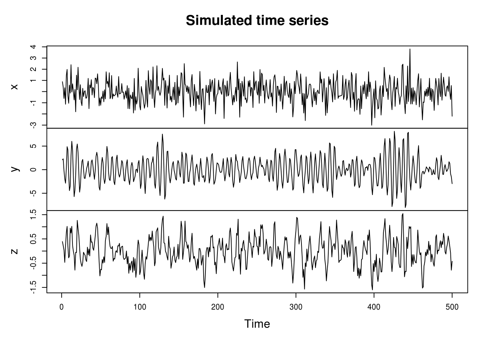
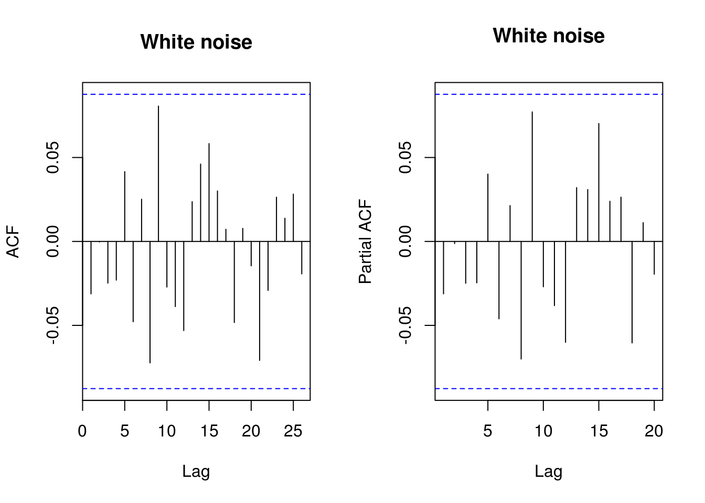
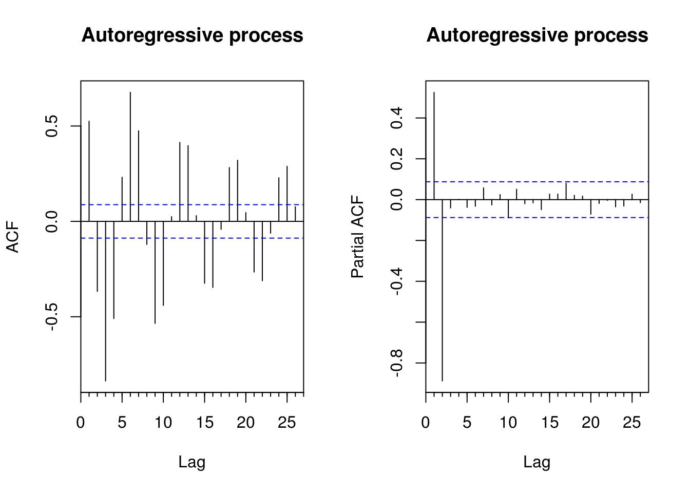

1.3 Second order stationarity
The example below corresponds to examples 1.9 and 1.10 from Shumway and Stoffer. It shows how to create MA and AR series based on white noise using the filter function. It is best practice when simulating autoregressive models to burn-in (discard) the first few iterations to remove the dependencies on the starting values (here zeros). Note that the function filter returns a ts object.
set.seed(1)
x <- rnorm(550, 0, 1) # Samples from N(0,1) variates
y <- filter(x, method = "recursive", filter = c(1, -0.9)) #autoregression
z <- filter(x, method = "convolution", filter = rep(1/3, 3), sides = 2) # moving average
class(z)[1] "ts"x <- x[-c(1:49, 550)]
y <- y[-c(1:49, 550)]
z <- z[-c(1:49, 550)]
# ts.union if we did not remove values (and the class `ts`)
plot.ts(cbind(x, y, z), main = "Simulated time series")
We notice immediately that the MA process looks smoother than the white noise, and that the innovations (peaks) of the AR process are longer lasting.
If we had not simulated more values and kept some, the first and last observations of \(z\) would be NAs.
The series created are of the form
\[ z_t=\frac{1}{3}(x_{t-1}+x_{t}+x_{t+1})\]
and
\[ y_t= y_{t-1}-0.9y_{t-2}+x_t.\]
The correlogram provides an easy to use summary for detecting linear dependencies based on correlations. The function acf will return a plot of the correlogram, by default using the correlation. Unfortunately, the basic graph starts at lag 1, which by default has correlation 1 and thus compress the whole plot unnecessarily. Blue dashed lines indicate 5% critical values at \(\pm 1.96/\sqrt{n}\) under the null hypothesis of white noise (not stationarity).
The function acf computes and plots \(c_t\) and \(r_t\), the estimators for the autocovariance and autocorrelation functions
\[c_t= n^{-1}\sum_{s=\max(1,-t)}^{\min(n-t,n)}[X_{s+t}-\bar X][X_s-\bar X], \quad r_t={c_t}/{c_0}.\]
The argument type controls which is used and defaults to the correlation. This is easily extended to several time series observed over the same interval
\[c_{ij}(t) = n^{-1}\sum_{s=\max(1,-t)}^{\min(n-t,n)}[X_i(s+t)-\bar X_i][X_j(s)-\bar X_j].\]
Unfortunately, the function acf always display the zero-lag autocorrelation, which is 1 by definition. This oftentimes squeezes
the whole correlogram values and requires manual adjustment so one can properly view whether the sample autocorrelations are significant.
# acf(x, lag.max=20, demean = TRUE, main = 'White noise') #WRONG
par(mfrow = c(1, 2))
TSA::acf(x, demean = TRUE, main = "White noise")
pacf(x, lag.max = 20, main = "White noise")
# Equivalent functions from forecast
forecast::Acf(y, main = "Autoregressive process")
forecast::Acf(y, type = "partial", main = "Autoregressive process") #or forecast::Pacf
You can thus use instead the function forecast::Acf, which removes the first lag of the autocorrelation function plot, or TSA::acf. The function pacf return the partial autocorrelations and the function ccf to compute the cross-correlation or cross-covariance of two univariate series
# Load datasets
data(deaths, package = "MASS")
data(lh, package = "datasets")
# Second order summaries
forecast::Acf(lh, main = "Correlogram of \nLuteinizing Hormone", ylab = "Autocorrelation") #autocorrelation
acf(lh, type = "covariance", main = "Autocovariance of\n Luteinizing Hormone") #autocovariance
acf(deaths, main = "Correlogram of\n`deaths` dataset")
ccf(fdeaths, mdeaths, ylab = "cross-correlation", main = "Cross correlation of `deaths` \nfemale vs male")
# acf(ts.union(mdeaths,fdeaths)) # acf and ccf - multiple time series of
# male and female deathsThe plots of the deaths series shows the pattern of seasonal series, and the autocorrelations do not damp down for large lags. Note how one of the cross series is only plotted for negative lags. Plot in row 2 column 1 shows \(c_{12}\) for negative lags, a reflection of the plot of \(c_{21}\) for positive lags. For the cross-correlation, use e.g. ccf(mdeaths, fdeaths, ylab="cross-correlation").
Plotting lagged residuals is a useful graphical diagnostic for detecting non-linear dependencies. The following function plots residuals at \(k\) different lags and may be useful for diagnostic purposes.
pairs.ts <- function(d, lag.max = 10) {
old_par <- par(no.readonly = TRUE)
n <- length(d)
X <- matrix(NA, n - lag.max, lag.max)
col.names <- paste("Time+", 1:lag.max)
for (i in 1:lag.max) X[, i] <- d[i - 1 + 1:(n - lag.max)]
par(mfrow = c(3, 3), pty = "s", mar = c(3, 4, 0.5, 0.5))
lims <- range(X)
for (i in 2:lag.max) plot(X[, 1], X[, i], panel.first = {
abline(0, 1, col = "grey")
}, xlab = "Time", ylab = col.names[i - 1], xlim = lims, ylim = lims, pch = 20,
col = rgb(0, 0, 0, 0.25))
par(old_par)
}
# Look at lag k residuals
pairs.ts(sunspots)1.3.1 Exercise 2: SP500 daily returns
- Download the dataset using the following command
sp500 <- tseries::get.hist.quote(instrument = "^GSPC", start = "2000-01-01",
end = "2016-12-31", quote = "AdjClose", provider = "yahoo", origin = "1970-01-01",
compression = "d", retclass = "zoo")- Obtain the daily percent return series and plot the latter against time.
- With the help of graphs, discuss evidences of seasonality and nonstationarity. Are there seasons of returns?
- Plot the (partial) correlogram of both the raw and the return series. Try the acf with
na.action=na.passand without (by e.g. converting the series to a vector usingas.vector. Comment on the impact of ignoring time stamps. - Plot the (partial) correlogram of the absolute value of the return series and of the squared return series. What do you see?